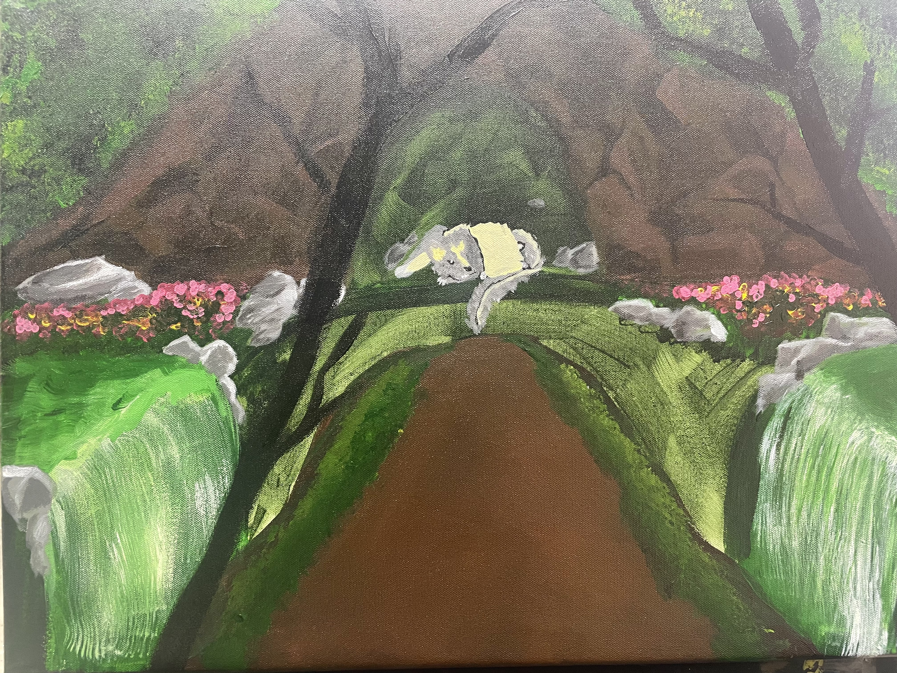

My intrest and passion in art does not neccisarily come from a admiration of the act of drawing or painting, but from what worlds and stories that I can create with them and bring to life. So I am interested in any way and medium that can let me express my stories! Which brings on part two.
To me CS has a similar appeal as art does as I can create something that I envision according to my desires. I enjoy it also as a form of puzzle solving that keeps me entertained in the process and I hope to combine the two interests which currently may be game design or animation.